A controlled, domain-limited evaluation of three model pipelines
7 November 2026
Working manuscript. Not peer reviewed. Manuscript and review package updated 7 November 2026 using the complete available samples.
Comparing attribution graphs offers a way to ask whether differently worded questions recruit shared model features. We tested how this overlap relates to the requested fact and the predicted answer in Gemma-2-2B, Qwen3-1.7B, and Qwen3-4B. Reworded questions about the same fact had higher mean feature overlap than questions about other facts in all three analyzed samples, including after equalizing feature counts. Because those comparisons also shared words and expected answers, we tested Qwen3-4B with identical word and token inventories within each of six country pairs while varying the queried country, wording, and correct A/B answer. All 48 predicted letters were correct. The same-country minus different-country overlap was 0.0628 when the answer letter stayed the same and -0.0022 when it changed. Their average, the prespecified primary outcome, was 0.0303 (95% block-bootstrap interval 0.0265–0.0338). In a separate exploratory diagnostic using one country pair, all eight selected wrong-answer graphs shared more features with a correct prediction giving the same answer than with a correct prediction for the intended country. Together, the experiments identify an answer-associated pattern in feature overlap that persists in selected errors. This supports interpreting overlap jointly with the prompt comparison and predicted answer, rather than as a standalone marker of correct factual processing. The stronger comparisons concern Qwen3-4B geography; a failed history pilot prevented the planned historical graph evaluation.
Knowing whether a language model gives a correct answer does not explain how it arrived at that answer. Mechanistic interpretability seeks to address this question by examining the computations inside a model [1]. For factual questions, this raises a more specific question: when different prompts ask about the same fact, what remains similar in the model’s internal activity?
Attribution graphs show patterns of activity inside a model and estimate how those patterns contribute to its prediction. These learned patterns are called features [1]. Previous research has examined how model computations vary across prompts [2]. Studies of multiple-choice questions have also shown that rearranging answer options can change which answer a model selects [5]. These findings motivate examining how differences between questions and their predicted answers relate to the features found in attribution graphs.
Comparing these graphs requires distinguishing what the questions and answers have in common. For example, two rewordings of a question about France’s capital both expect Paris. Their graphs might share features because they ask about the same fact, use some of the same words, or predict the same answer. We therefore need comparisons that ask about the same fact while changing the model’s required output.
We initially hypothesized that, within each model, differently worded questions about the same fact would share more attribution-graph features than questions about different facts. We tested this association in Gemma-2-2B, Qwen3-1.7B, and Qwen3-4B. We measured feature sharing using Jaccard similarity, our measure of feature overlap: the proportion of all distinct features across two graphs that appears in both. It compares the features present, not the connections between them.
We then used Qwen3-4B to examine this association with stronger controls for shared words and answers. For multiple-choice questions using the same two countries, we kept the words and their counts the same while varying which country was asked about and whether the model had to answer A or B. Changing the letter assigned to a capital allowed the factual answer to remain the same while the required response changed. We also examined selected incorrect predictions, comparing their graphs with correct predictions for the intended country and correct predictions giving the same answer for another country.
Feature overlap was associated with both the relationship between questions and the answer the model predicted. We next describe the model samples, question designs, and graph comparisons used to evaluate these relationships.
We organized the study around three comparisons (Figure 1). First, we compared reworded questions about the same fact with questions about different facts across all three models. Second, we gave Qwen3-4B multiple-choice questions and swapped the capitals assigned to A and B. This changed the required answer letter without changing the capital being asked for. We then tested whether questions about the same country still shared more graph features than questions about different countries. Third, also using Qwen3-4B, we examined attribution graphs for incorrect predictions, referred to here as error graphs. Each error graph was compared with two graphs for correct predictions: one giving the correct answer for the intended country, and one giving the same answer as the error, but in a context where that answer was correct. The three analyses used distinct question sets and were evaluated separately.
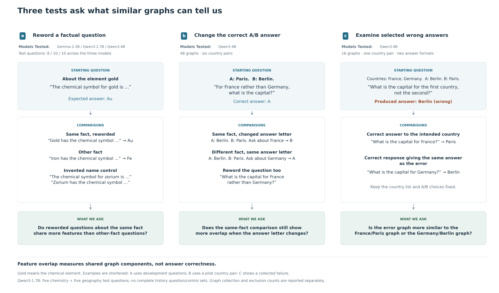
Figure 1. Three tests ask what similar graphs can tell us. A, Compare rewordings of the same fact with other-fact questions in the same subject and evaluation group. The analysis includes 8 Gemma-2-2B, 10 Qwen3-1.7B, and 10 Qwen3-4B test questions. Qwen3-1.7B includes five chemistry and five geography questions; no history fact has a complete question/control set. Gold is the chemical element. The examples use development questions, not the test questions plotted in Figure 2. B, In Qwen3-4B, vary the queried country, capital-to-A/B mapping, and wording while preserving the words and token counts within each country pair. All 48 predicted letters were correct. France/Germany illustrates the design using a pilot pair excluded from that evaluation. Displayed prompts are shortened; full prompts retain both countries and the other words, while word order and country roles vary. C, Compare a selected wrong-answer graph with correct predictions for the intended country and for the answer actually produced. This Qwen3-4B diagnostic has 16 graphs from one country pair and two response formats, with shared controls. Answers refer to the highest-probability next token. Arrows indicate comparisons, not causes; box colors identify steps. Sample accounting reports collection counts, exclusions, and failed preliminary checks.
We analyzed attribution graphs from three language models: Gemma-2-2B, Qwen3-1.7B, and Qwen3-4B. Neuronpedia ran the models and generated the graphs remotely. We analyzed the saved graphs locally, without running the models on our own hardware. Within each model, we compared feature sharing between reworded questions about the same fact with feature sharing between questions about different facts. We used the same Jaccard similarity measure and feature-exclusion rules across all three models, providing a separate test of the same hypothesis in each model.
The question/control design included 30 facts, with ten each from chemistry, geography, and history. Each fact had a starting question, a reworded question asking for the same fact, and two invented name controls. These controls replaced the real name with an invented name while preserving either the starting or reworded sentence pattern. Within each subject, five facts were assigned to development and five to evaluation. All four question versions for a fact stayed in the same set. Development questions supported method development and diagnostic checks; evaluation questions provided the primary test of whether rewordings of the same fact shared more features than questions about different facts.
| Model | Question/control graphs collected / planned | Fact/wording graphs collected / planned | Evaluation facts included and subjects |
|---|---|---|---|
| Gemma-2-2B | 120/120 | 27/27 | 8: chemistry 5, history 3 |
| Qwen3-1.7B | 91/120 | Not collected | 10: chemistry 5, geography 5 |
| Qwen3-4B | 118/120 | 27/27 | 10: chemistry 5, geography 5 |
For Qwen3-1.7B, the 91 collected graphs comprised 40 chemistry, 40 geography, and 11 history graphs. Chemistry and geography each had all four versions for ten facts. The service rejected 29 history requests that exceeded its 10-input-token limit, leaving no history fact with all four required versions. These are collection failures, not incorrect predictions. Applying the same inclusion rules across subject areas yielded five chemistry and five geography evaluation facts; development questions were analyzed separately.
Two versions of the Columbus question were unavailable for Qwen3-4B after repeated server failures: the factual rewording and the reworded invented name control. The separate fact/wording experiment, described in Section 2.3, supplied 27 graphs each for Gemma-2-2B and Qwen3-4B. These two designs therefore contain 383 available graphs in total; Qwen3-4B remains incomplete at 145/147. The additional Qwen3-4B answer-letter and selected-error studies contributed 48 and 16 graphs, respectively, and are described separately in Sections 2.5–2.6.
The requirement for support across all three subjects remains unmet. Llama was deferred for resource reasons and was not generated. All reported comparisons retain the specified prompts, development/evaluation assignments, expected tokens, and inclusion rules. Section 2.8 describes the Qwen3-1.7B analysis and verification; the protocol and analysis-planning records are retained with the reproducibility materials.
Collection and inclusion counts are separated in the sample-accounting table. All three models contribute chemistry comparisons; geography and history do not provide complete three-model comparisons. Unused questions are not automatically incorrect answers: missing controls, partial next tokens, and lack of a comparison partner are distinct exclusion reasons.
We measured feature sharing between questions using Jaccard similarity, our measure of feature overlap. This is the number of shared features divided by the total number of distinct features across both graphs. The score ranges from zero, when no features are shared, to one, when both graphs contain the same features. It compares the features present, not the connections between them.
For each graph, we identified distinct learned features using the
tuple (feature family, layer, feature ID). Matching
numerical IDs in different layers or feature families remained distinct.
A feature that appeared at multiple positions in the input was counted
once. We excluded input representations (embeddings), output prediction
scores (logits), and reconstruction-error nodes, which represent
activity not captured by the learned features. We also excluded nodes
with missing or duplicated graph-node identifiers. Features were
compared only between graphs from the same model.
For each starting question, we calculated Jaccard overlap with its factual rewording. We then calculated its overlap with the reworded questions for every other included fact from the same model, subject, and development or evaluation set. Our primary outcome was the same-fact overlap minus the average of these other-fact overlaps. A positive difference therefore indicated greater feature sharing with the same-fact rewording. Figure S8 summarizes the workflow.
Let T_i and P_i denote the feature sets from the graphs for a starting question and its factual rewording, respectively. Their same-fact overlap minus the average other-fact overlap is:
M_i = Jaccard(T_i, P_i) - mean_{j ≠ i} Jaccard(T_i, P_j),
where j includes every other included fact in the same model, subject area, and development or evaluation set.
A fact was included only when all four question and control graphs were available. For both factual prompts, the model’s highest-probability next token had to match the expected token after removing leading and trailing whitespace, such as spaces or line breaks. At least one other fact also had to meet these conditions within the same model, subject area, and development or evaluation set, providing the other-fact comparison. This is a next-token matching rule, not verification of a complete generated answer.
Zero means equal overlap; negative values mean more shared features in the other-fact comparison. The outcome is a difference between Jaccard scores, not a percentage increase. Other designs below specify their own subtraction; weighted cosine comparisons are called differences in weighted similarity rather than feature overlap.
For each model, we summarized the evaluation-fact differences by their mean and a descriptive 95% percentile bootstrap interval, using 10,000 resamples of the calculated fact-level differences with replacement. Exact one-sided sign-flip tests assessed whether the mean difference was greater than zero. Complementary within-domain fact-label permutations assess matched assignment without treating graph pairs as independent samples. Facts reuse comparators, sign-flip assumptions require care, and the same facts recur across models: 8+10+10 represents 28 model-specific fact observations, not 28 unique independent facts. No pooled model-ranking test is performed.
To examine how feature sharing varied with the requested fact and its wording, we analyzed three facts from each of three subject areas in Gemma-2-2B and Qwen3-4B. Each fact had an original question and two rewordings, giving 27 graphs per model. We labeled these versions “original,” “alternative 1,” and “alternative 2.” We compared questions about the same fact across different versions, and questions about different facts within the same labeled version. Both comparisons used questions differing in fact and version as their baseline. The version labels did not imply identical sentence patterns across facts. We calculated overlap differences within each subject area and then averaged across areas, using permutation tests that preserved these groupings. Their relative sizes were descriptive, not tests that wording mattered more than the fact being asked about or that the models differed.
Invented name controls replace a real entity name with an invented name (for example, replacing “gold” with “zorium”) while retaining either the starting sentence pattern or its reworded version. A separate sensitivity check compares outputs only within broad next-token categories: letters/numbers, whitespace, or punctuation/symbols. This does not match the exact answer, its meaning, or its probability.
Raw-file hash checks cover all 383 graphs in the question/control and fact/wording datasets. Collision-safe feature counts were checked against the saved audits, and archived per-fact contrasts were reconstructed to absolute tolerance 1e-12. Section 2.8 and the reproducibility records describe the Qwen3-1.7B verification.
Feature counts. Within each model/domain/held-out block, K is the smallest target or positive-paraphrase feature count. Each graph is independently subsampled without replacement to K or floor(K/2). Across 200 repetitions (seed 20260905), a sampled graph is reused in all its comparisons. We report per-fact averaged margins, descriptive 10,000-resample fact-level bootstrap intervals, and separately the variability across subsampling repetitions. Equal cardinality does not equalize feature-selection bias or remove lexical confounding.
Shared words and answer identity. Word overlap is case-folded alphanumeric word-set Jaccard, without stopword removal. Other-fact comparators must either equal or exceed own-paraphrase word overlap, fall within an absolute 0.05 caliper, or satisfy that caliper plus a feature-count ratio within 1.25 of the own paraphrase. All qualifying comparators are averaged. No support is reported as not estimable, not zero. Calipers were not widened after inspection. Expected-answer identity is separately tabulated.
Tokenizer audit. Official Qwen tokenizer revisions were pinned and their files hashed. Their single-token decodings were checked against archived prompt pieces and top logit IDs. Expected continuations were encoded against each stored prompt with zero or one separating space, requiring prefix stability. Whole-answer next-token matches, substantive multi-token prefixes, whitespace-only compatibility, and mismatches under those conventions remain distinct. Historical tokenizer revision identity is not fully recoverable, and current-tokenizer compatibility is not proof of a completed answer. Gemma’s official tokenizer download returned HTTP 401; its tokenizer-aware classification remains unavailable. No mirror or local weights were used [3,4].
For crossed output sensitivity, a domain must retain all nine cells under the original strict string rule. We do not select individual favorable cells or replace the original cohort.
To make this comparison, we gave Qwen3-4B multiple-choice questions containing two country names and two possible capitals, labeled A and B. Each question asked for the capital of one of those countries. Changing which capital was assigned to each letter allowed us to change the required output without changing the underlying fact. For illustration, a question about France’s capital requires A when Paris is labeled A, but B when Paris is labeled B. Across questions using the same two countries, we kept the words and word counts the same but varied which country was asked about, the word order, and the assignment of capitals to A and B. We could therefore compare feature overlap when questions asked about the same country but required either the same or different answer letters.
We used Qwen3-4B’s non-thinking chat format. Within each of six country pairs, we varied the country asked about, the assignment of capitals to A/B, and the wording, producing eight graphs per pair. Each prompt contained the same words and the same counts of tokenizer IDs within its pair, although order and country roles changed. France/Germany was used only in the preliminary behavioral check for this experiment. We measured same-country minus different-country overlap separately for comparisons with the same and different answer letters. The prespecified primary outcome was the average of these two differences. Uncertainty used six country pairs, not 48 independent graphs. The exact conditional fact-correspondence test contained 4096 assignments; its locally frozen multiple-testing adjustment covered three model/version opportunities.
The follow-up design was informed by earlier results, but its rules were fixed before collecting its evaluation graphs. Earlier plain-completion pilots had failed: Qwen3-4B chose A on all eight items, giving 4/8 correct labels, while Gemma produced the correct capitals but none of the eight requested letters. These failed pilots remain separate from the original cohorts. The revised Qwen study controls word and token inventories and varies answer labels, but does not remove differences in query order or how country names are assigned roles.
Research on position-based retrieval has documented difficulties identifying items by list position, particularly when counting backward [7]. Our position-based analysis asked about a country’s position in a list while varying the queried country, list order, answer mapping, and wording. Its prespecified accuracy requirement had to be met in a 16-item pilot before collecting evaluation graphs. After the pilot failed, we conducted an explicitly exploratory diagnostic of selected errors; this was not a replacement evaluation cohort.
We investigated selected cases by generating attribution graphs and checking that the incorrect predictions occurred again. For example, with France listed before Germany, asking for the first country’s capital incorrectly produced Berlin. Naming France directly produced Paris, whereas naming Germany produced Berlin. Both named-country predictions were correct for their respective questions. Comparing their graphs with the incorrect prediction’s graph let us ask whether feature sharing was greater with the intended fact (France’s capital is Paris) or with the answer the model actually predicted, Berlin.
The diagnostic contained 20 next-token previews: four literal/replay positive controls and four selected France/Germany cases varied by how the country was identified (its name or list position) and by response format (A/B letter or capital name). These cases were selected because the correct answer conflicted with choosing an answer option by its position. We fixed the 16 diagnostic prompts before generating their graphs. Each wrong-answer graph was compared with two correct-answer graphs: one for the intended country and one producing the same answer as the error. Both controls preserved the option layout and country-list order. The position-based and named-country prompts differ in wording, length, and repeated names; unlike the matched-choice experiment, their word and token inventories are not identical.
Graph settings were maxNLogits=10, desiredLogitProb=0.99, nodeThreshold=0.8, edgeThreshold=0.85, and maxFeatureNodes=5000, using hosted Qwen3-4B with the recorded transcoder source. Exact prompts and token sequences, source/settings, checksums, identifier integrity, and observed answers were audited. Wrong answers were deliberately retained. All comparisons report feature-set Jaccard, exported-influence-weighted cosine, and an equal-feature-count sensitivity using 200 repetitions with fixed seeds. Direct incoming edges to the observed answer logit were summarized by source type and token location, preserving signs and absolute weights. Display panels retain the ten largest absolute direct edges and the ten largest upstream edges into those displayed predecessors; full tables retain the remaining edges.
These selected cases concern two facts in one country pair, with reused controls. We report descriptive comparisons without confirmatory p-values or population confidence intervals. The country-location weight ratio discussed below was an additional descriptive inspection of the archived role tables, not a prespecified primary endpoint. All outcomes concern the top next token under the hosted non-thinking setup; they do not independently establish full generated-answer behavior [6]. Local provenance checks also do not independently certify hosted-weight identity.
After inspecting the matched-choice results, we directly compared the same-label and changed-label fact contrasts across the six country-pair blocks. We report the mean paired difference, a 20,000-resample block-bootstrap interval, a Student-t interval, and a two-sided exact block sign-flip test. These summaries assume independent blocks; the sign-flip null additionally assumes symmetric block contrasts. This added test is exploratory and is distinct from the original conditional correspondence test. The 4,096 correspondence assignments are null configurations within six blocks, not 4,096 independent observations.
The tests answer different questions:
| Test | Question and outcome | Reference distribution and interpretation |
|---|---|---|
| Prespecified conditional correspondence test | Is the average of the two fact contrasts greater than expected under reassigned fact correspondence? Primary mean: 0.0303. | Reassign queried-fact correspondence across wording versions within each answer-label group: four assignments per country pair and 4096 across six pairs. The reference null treats those assignments as exchangeable conditional on the label and word inventory. It tests correspondence under that null, not a causal effect isolated from word order or country roles. |
| Exploratory block sign-flip test | Is the same-letter fact contrast different from the changed-letter fact contrast? Paired mean difference: 0.0650. | Flip the sign of each of six country-pair differences, assuming independent blocks and symmetric differences under the null. The two-sided test concerns the difference between conditions, not their average. |
The conditional test’s small p-value describes the specified reassignment null; it does not establish that the prompts are exchangeable for every substantive hypothesis. Residual order and role differences constrain interpretation. The question/control comparisons also reuse other-fact comparators, so their resampling results are reported alongside the within-domain correspondence tests rather than as independent replications.
As graph-location sensitivities, we removed feature nodes at the final prediction context position, in the last quarter of observed feature layers, or both, before collapsing feature identities. Empty representations are unavailable rather than assigned zero overlap. These filters test concentration of the measured association; they are not causal ablations, and retained graphs remain conditioned on the generated output. We applied the same filters to the selected failure comparisons without attaching population p-values to their dependent triples.
A final historical-date study was locally frozen on 5 October before its hosted outcomes. It used Qwen3-4B only, two separate pilot event pairs plus four literal-label checks, and a planned evaluation of 20 event pairs spanning US documentary history and spaceflight chronology. All eight prompts per pair had identical token inventories; queried event, year-to-label mapping, and question/context order varied. The protocol required all 20 pilot checks to pass before any of the 160 evaluation graphs could be requested. Its planned primary endpoint was the mean same-label minus changed-label fact contrast, conditional on complete correct-answer blocks, with at least 16 supported blocks including six per theme. The failed pilot stopped collection, so this endpoint was not measured. This prospective, outcome-informed follow-up does not change original history inclusion.
The Qwen3-1.7B results use the combined 91-graph dataset, with the representation, inclusion rules, and comparisons within the same subject area in Section 2.2. Its ten evaluation facts supply the estimates shown throughout the current figures and tables. Analysis settings were recorded before calculating these estimates, but after earlier findings were known; these analyses are exploratory rather than an independent confirmatory replication. Verification included raw-file hashes, agreement with archived feature representations, and reconstruction of previously calculated per-fact Jaccard and influence-weighted contrasts to absolute tolerance 1e-12. Earlier estimates remain in the archive and are not counted as additional evidence.
Graphs used the recorded llamascope-2-transcoder-16k-k64
source and LoRSA feature family, with at most ten candidate next tokens
(maxNLogits=10), node and edge thresholds of 0.8 and 0.85, and a
5,000-feature-node cap. LoRSA tracing settings were qkTopFraction=0.5
and qkTopk=5. Desired cumulative output probability was 0.99 for the
completion requests; some archived files used 0.95 output coverage. We
preserved those files and their source and exporter metadata rather than
assuming identical hosted versions. Raw-file audits checked identifiers,
edge endpoints, duplicate edges, and finite numerical values. No shorter
prompts or replacement questions were introduced.
The primary contrast was same-fact minus average other-fact Jaccard overlap. We used 10,000 fact-level bootstrap resamples, exact one-sided sign-flip tests, and exact fact-label permutations within each subject area, with main seed 20260714. The evaluation permutation enumerated 5! × 5! = 14,400 assignments. Bootstrap intervals and sign-flip tests describe fact-level differences that share comparison questions; the permutation assumes exchangeable factual pairings within each subject area. Holm correction was applied to the 15 secondary metric/contrast tests, excluding the primary comparison. This family crossed four metrics (feature Jaccard and cosine similarities of influence-weighted features, layer profiles, and layer-to-layer edge flow) with four comparators (average other fact, most similar other fact, same-pattern invented name, and reworded invented name), minus the primary Jaccard/average-other-fact test. Output-type-matched subsets, error-inclusive and equal-count checks, and subject-specific summaries were outside this correction family. These exploratory summaries do not remove shared-word or expected-answer differences.
Sensitivity analyses retained both invented name controls, comparisons matched by broad next-token category, the most similar other-fact comparator, exported-influence-weighted cosine, reconstruction-error-inclusive representations, layer profiles, and layer-to-layer edge-flow summaries. Feature weights summed absolute exported influence across occurrences; layer profiles aggregated that influence by layer, and edge-flow profiles aggregated absolute edge weights between eligible feature nodes by source and target layer. Output-type matching required the control and starting question to have the same broad next-token category, retaining nine same-pattern and ten reworded-control comparisons. Equal-feature-count checks reused Section 2.4’s 200 subsamples at K and floor(K/2), with seed 20260905 and K defined separately within each subject’s evaluation set. The subsamples were not treated as additional facts. Leave-one-fact-out summaries removed one already-calculated difference at a time without rebuilding its comparison pool.
Retrospective saved-data audits used the export, word-matching, and tokenizer procedures in Section 2.4. Export checks covered all 91 graphs; word-matching checks covered the ten included evaluation facts; token checks covered all 50 available factual starting/reworded prompts, including development questions and partial history sets. Reconstruction-error influence was summarized as absolute error-node influence divided by absolute nonterminal-node influence, not an answer-error rate. The archived tokenizer and unchanged word-matching rules were reused. Compatible answer beginnings remained distinct from complete expected next-token answers, and these audits did not alter inclusion or primary estimates. Audit plans and their timing relative to the overlap analysis are retained in the provenance records. Other models and the separate fact-by-wording experiment retain their own analysis samples.
Every included evaluation question had greater overlap with its same-fact rewording than its average overlap with rewordings of other facts. Mean differences in feature overlap were 0.170 for Gemma (descriptive 95% interval [0.085, 0.276], n=8), 0.0894 for Qwen3-1.7B ([0.0820, 0.0976], n=10), and 0.162 for available Qwen3-4B cases ([0.131, 0.194], n=10). Exact sign-flip p-values were 0.00390625, 0.0009765625, and 0.0009765625; fact-label permutation p-values were 0.00139, 0.0000694, and 0.0000694, respectively. The association is consistent across these samples; their differing subject coverage and repeated facts make this a within-model result, not a model ranking.
Qwen3-1.7B showed positive overlap differences for all five chemistry and all five geography evaluation facts, with subject means of 0.0854 and 0.0935. No history fact had a complete control set. Figure 2 presents the three model samples and their subject-specific estimates. Figure S7 reports Qwen3-1.7B collection and inclusion counts, with detailed analyses in A5.
The next question is what the association distinguishes. A same-fact rewording can preserve both words and the expected answer. We therefore examined whether the controls could separate those relationships.
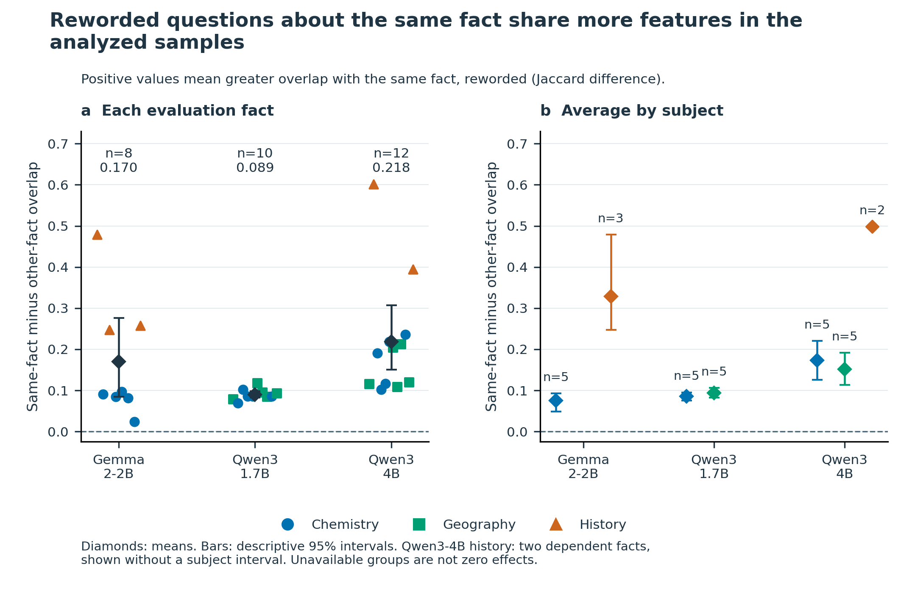
Figure 2. Reworded questions about the same fact share more features in these samples. A, Points represent questions reserved for evaluation that passed the fixed inclusion rules. The difference in feature overlap is same-fact rewording overlap minus average other-fact rewording overlap within the same subject and test set. The displayed arithmetic, 0.50 − 0.30 = +0.20, illustrates this subtraction. These example numbers are not measured results. Positive, zero, and negative values indicate more, equal, and less overlap with the same fact; units are Jaccard differences, not percentage increases. B, Subject averages. Colors and shapes identify subjects; diamonds show averages and bars show saved 95% intervals from 10,000 question-bootstrap resamples. n counts questions. Means are 0.170 for Gemma-2-2B (8 questions), 0.089 for Qwen3-1.7B (10), and 0.162 for Qwen3-4B (10). Qwen3-1.7B includes five chemistry and five geography questions, with a descriptive pooled interval of 0.082–0.098. Repeated facts and different subject coverage preclude a model ranking; shared words and answers remain coupled to fact identity. Missing groups are unavailable, not zero. *The Qwen3-4B collection contains 145/147 planned graphs.
To separate factual identity from shared wording, we looked for other-fact questions that matched each same-fact pair’s word overlap. None met any of the three word-matching or joint word/feature-count rules: 0/8 Gemma, 0/10 Qwen3-1.7B, and 0/10 Qwen3-4B. Even the most word-overlapping other-fact prompt scored at least 0.1806 below the same-fact rewording across these samples (Supplement Figure S4). The gap was not a borderline threshold result.
Answer identity was coupled to factual identity as well: none of the 106 directed other-fact comparisons shared the expected answer, whereas same-fact pairs did. This comparison changes the fact, word overlap, and expected answer together. It establishes their combined association with shared features, leaving their separate contributions unresolved.
The fact-by-wording experiment compared question pairs sharing a fact or a labeled version. Both comparisons had positive average overlap differences relative to pairs differing in both fact and version: 0.074/0.118 in Gemma and 0.101/0.064 in Qwen3-4B (Figure 3). Shared version labels did not consistently indicate identical sentence patterns across facts. Influence-weighted similarity had the same ordering within each pipeline (0.090/0.114 and 0.105/0.075). This ordering is descriptive because output quality and subject coverage vary: only Qwen3-4B geography passed the strict expected-token rule in all nine questions (Supporting analysis A1).
When controls were matched only by broad next-token category, overlap differences relative to same-pattern invented name controls were -0.069 (Gemma, n=2), -0.0109 (Qwen3-1.7B, n=9), and +0.096 (Qwen3-4B, n=10). Differences relative to reworded invented name controls were positive in all three models (Figure 4). For Qwen3-1.7B, the mean was +0.1059 across ten reworded-control comparisons. Before output-type matching, eight of its ten evaluation questions shared more features with the same-pattern invented name control than with their factual rewording; seven of nine did so in the matched subset. All ten favored the factual rewording over the reworded invented name control. These contrasting results motivate a follow-up that preserves the available words while varying the requested country and the answer letter.
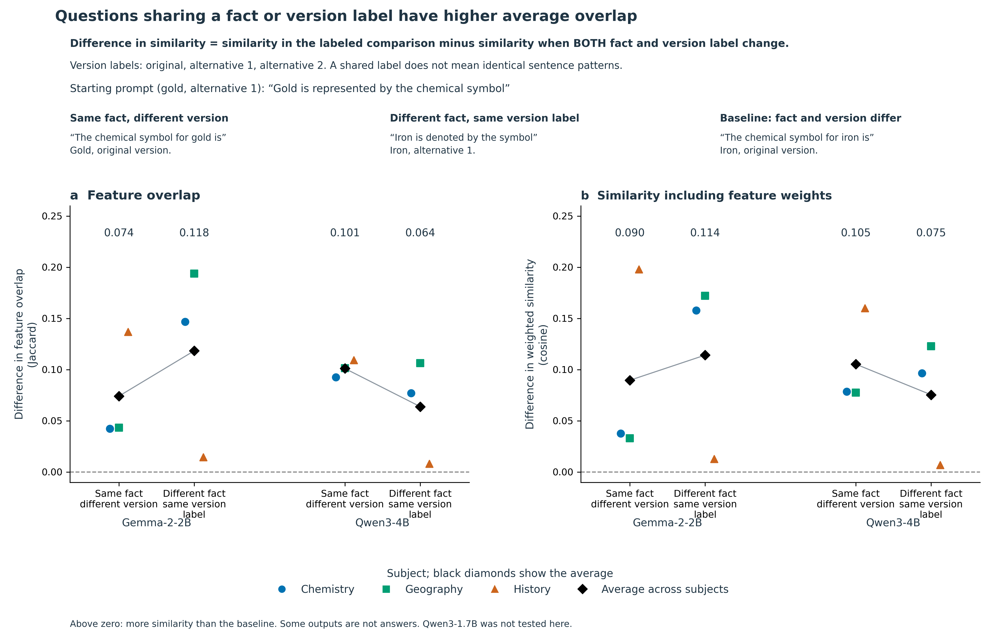
Figure 3. Questions sharing a fact or version label have higher average overlap. A, Feature-set overlap differences. B, Saved-influence-weighted cosine differences, comparing the direction of weighted feature vectors. Question versions were labeled original, alternative 1, or alternative 2. The baseline differs in both fact and version label. Each value is similarity in the labeled comparison minus similarity in that baseline, calculated within subject area. The gold/iron examples use exact saved prompts. Starting from gold alternative 1, gold original shares the fact, iron alternative 1 shares the version label, and iron original differs in both. Shared version labels did not imply identical sentence patterns across facts; this is not an exact-wording control. Each tested model has 27 graphs: three facts × three versions × three subject areas. Colored points are subject averages; black diamonds average subjects equally. Lines connect descriptive estimates, not intervals. Mean same-fact/same-version-label differences in A are 0.074/0.118 for Gemma-2-2B and 0.101/0.064 for Qwen3-4B. Some predicted first tokens are incomplete answers or non-answers. Only Qwen3-4B geography passes all nine expected-token checks; its differences are 0.101/0.106. These similarity measures do not measure correctness or establish factor dominance or model superiority. Qwen3-1.7B was not tested here.
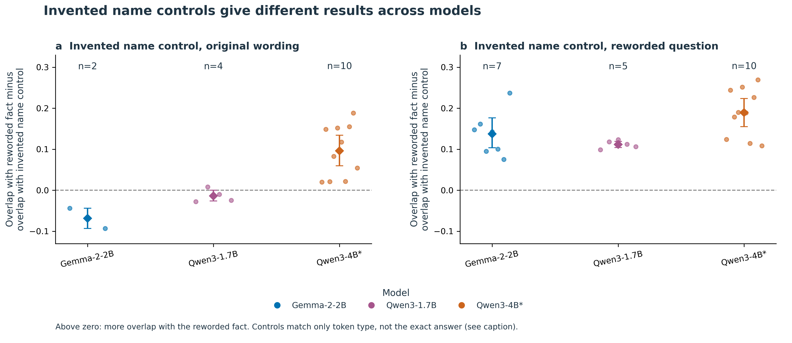
Figure 4. Invented name controls give different results across models. Replace the real name with an invented name, retaining the starting wording (A) or rewording it (B). For each test question, subtract overlap with the invented name prompt from overlap with the factual rewording. Positive values favor the factual rewording; negative values favor the invented name control. Colors identify models, points show questions, diamonds show means, and bars show saved 95% question-bootstrap intervals; n counts included questions. Panel A means are -0.069 (n=2), -0.011 (n=9), and +0.096 (n=10) for Gemma-2-2B, Qwen3-1.7B, and Qwen3-4B. For Qwen3-1.7B, the interval in A is -0.021–0.001; B has mean 0.106 (n=10; interval 0.092–0.119). The original-wording control has more overlap in 8/10 Qwen3-1.7B questions before token-type matching and 7/9 in the plotted matched subset. Matching uses only broad first-token categories (letters/numbers, whitespace, or punctuation/symbols), leaving exact answer, meaning, confidence, and correctness unmatched. Small, differently composed samples support comparison-specific findings rather than a general explanation by wording. *The Qwen3-4B collection is incomplete (145/147 graphs).
We next tested the same-country association with a shared answer and with a changed answer. In Qwen3-4B, we kept the available words and token counts identical within each of six country pairs while varying the country asked about, the wording, and the correct A/B answer. Comparing same-country with different-country overlap within each answer condition separated the two components of the average. All 48 predicted labels were correct, and all exports passed the recorded identifier and checksum checks.
The same-country minus different-country overlap was 0.0628 with the same answer letter and -0.0022 with a changed letter. Their average, the prespecified primary outcome, was 0.0303 (95% block-bootstrap interval 0.0265–0.0338), positive in each of six country-pair blocks. The exact conditional correspondence p-value was 0.000244141, or 0.000732422 after the prespecified three-opportunity adjustment. The positive average was concentrated in the same-letter component. The changed-letter estimate was near zero; this was not an equivalence test.
When the model had to answer with different letters, questions asking for the same capital had nearly the same average feature overlap as questions about different countries. The factual answer remained the same, but the greater feature overlap observed with a shared answer letter did not persist.
Across country relationships, overlap was also higher for the same answer letter than for different letters: the descriptive difference was 0.2827. This is a separate overlap contrast, not a fraction of variance or reasoning explained.
The exploratory direct paired difference between the same-letter and changed-letter fact components was 0.0650 Jaccard units across six blocks (95% block-bootstrap interval 0.0582–0.0715; Student-t interval 0.0553–0.0746; two-sided block sign-flip p=0.03125). All six differences were positive. The difference remained 0.0720 after excluding final-position feature nodes, 0.0688 after excluding the last quarter of observed feature layers, and 0.0732 after both filters (Supplement Figure S6). The association therefore extends beyond the removed node sets. These comparisons establish an answer-associated pattern in this task; word order, answer mapping, country roles, and output-conditioned graph construction remain possible contributors.
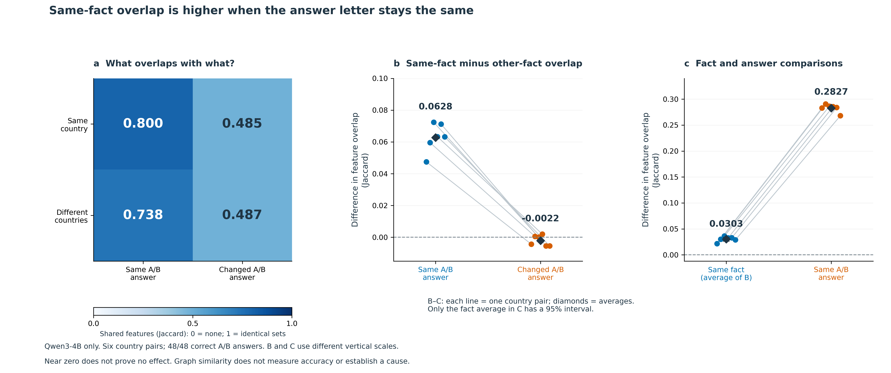
Figure 5. Same-fact overlap is higher when the answer letter stays the same. Qwen3-4B: six country pairs, 48 correct next-token A/B predictions, and identical word/token inventories within pairs. Rules were fixed before collection in this outcome-informed follow-up. A, Mean feature overlap in the four cross-wording comparisons: 0.8005, 0.4853, 0.7377, and 0.4874, read row by row. The scale runs from no shared features (0) to identical sets (1). B, Same-country minus different-country overlap is 0.0628 with the same letter and -0.0022 with a changed letter. Their paired difference is 0.0650 (exploratory Student-t 95% interval 0.0553–0.0746; two-sided sign-flip p=0.03125). C, Their average is the prespecified primary outcome: 0.0303 (95% block-bootstrap interval 0.0265–0.0338). The descriptive same-letter minus different-letter difference, averaged across country relationships, is 0.2827. Lines represent country pairs; diamonds show means. Only the primary mean in C has an interval drawn. Colors identify labeled categories; B and C use different vertical scales. Tests assume six independent country-pair blocks; the sign-flip test additionally assumes symmetric null differences. The 48 graphs and 4,096 conditional-null reassignments are not independent replicates. Near zero is not equivalence. Overlap differences are neither accuracy nor variance explained; query order, country roles, and output-conditioned graphs remain alternatives to a causal interpretation. Supplement S6 reports graph-location checks.
The matched-choice study used correct predictions. We next asked what graph overlap indicates when the predicted answer is wrong. With options “A: Berlin. B: Paris” and countries “France, Germany,” asking for the first country’s capital produced A or Berlin, depending on the response format. Naming France instead produced B or Paris; naming Germany produced A or Berlin. The wrong-answer graph shared more features with the correct Germany prediction giving the same answer than with the correct France prediction.
These cases came from a separate list-position pilot that produced 8/16 correct A/B decisions and stopped at its prespecified accuracy gate. A local audit found no mismatch in expected answers, submitted prompts, token sequences, or top-token decoding. The later exploratory 20-preview diagnostic passed all four literal/replay checks. Its eight named-country prompts produced the intended next token; its eight selected position-based prompts reproduced errors across both response formats. The failed pilot’s evaluation cohort remained uncollected.
All 16 diagnostic graphs passed integrity checks and reproduced their archived preview answers. Thus all eight ordinal errors persisted, all eight named-country controls remained correct, and all eight comparison triples met the clean-export and output-matching requirements. In every triple, the failure graph shared more features with the correct same-output response than with the correct intended-country response (Figure 6). The mean same-output minus same-country Jaccard difference was 0.1983 for A/B responses and 0.2649 for capital-name responses. Equal-feature-count sensitivities retained differences of 0.1851 and 0.2361, respectively; influence-weighted cosine preserved the direction in all eight triples. These are dependent descriptive comparisons, not eight independent replications.
The same-output advantage persisted in every selected comparison under all three graph-location filters. Removing both final-position nodes and the last quarter of observed feature layers gave mean differences of 0.2053 for labels and 0.2608 for capital names (Supplement Figure S6). The resemblance was therefore present beyond the removed node sets, even though the remaining graphs were still conditioned on the predicted output.
Across these selected cases, sharing the predicted answer corresponded to greater feature overlap than sharing the intended country. The cases use one country pair and overlapping controls, so they illustrate this relationship rather than estimate an error rate. Their layouts leave position matching and mishandled negation unresolved; Supporting analysis A3 reports the source-location observations, approximation error, and missing correct-answer logits.
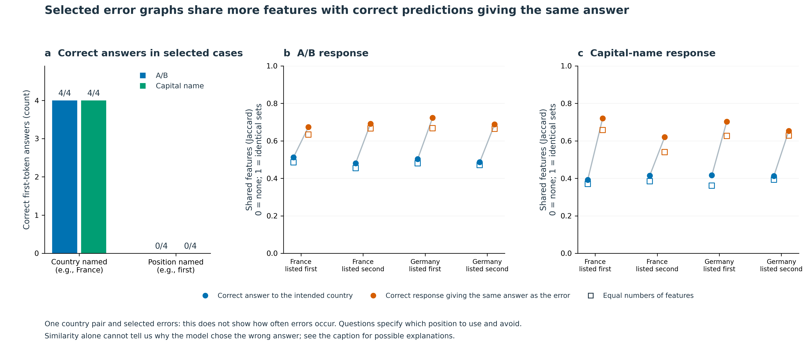
Figure 6. Selected error graphs share more features with correct predictions giving the same answer. Qwen3-4B, one country pair and two response formats. A, All eight named-country prompts predict the correct first token; all eight selected position-based prompts reproduce the error (four of each per format). B–C, Compare error graphs with correct predictions for the intended country (blue) or giving the same answer (orange), holding list order and A/B mapping fixed. With France first and A: Berlin, B: Paris, the indirect France question predicts Berlin; naming France predicts Paris and naming Germany predicts Berlin. The error graph shares more features with Germany/Berlin. Circles use all retained features; open squares average 200 equal-feature-count samples. Lines connect comparisons for the same error. Same-answer minus intended-country overlap averages 0.1983 for letters and 0.2649 for capital names (0.1851 and 0.2361 with equal counts). All 16 exports and eight comparison triples pass integrity and output checks. The selected cases share controls, so they support descriptive comparisons, not error-frequency estimates or population tests. Words differ between prompt types; position matching, negation errors, and output-conditioned graph structure remain unresolved explanations. The intended correct-answer node is absent from each error graph, leaving its contribution unknown.
The preceding comparisons establish the relationship between overlap and answer agreement. We also tested a simpler measurement explanation for the three-model association: whether it disappears when every graph contributes the same number of features. Mean differences remained positive at both sampling sizes (Supplement Figure S3).
| Pipeline | Full-feature mean | Equal K mean (descriptive 95% interval) | Equal K/2 mean | Positive averaged facts at K |
|---|---|---|---|---|
| Gemma-2-2B | 0.170 | 0.149 [0.066, 0.257] | 0.058 | 7/8 |
| Qwen3-1.7B | 0.089 | 0.084 [0.076, 0.092] | 0.033 | 10/10 |
| Qwen3-4B, incomplete | 0.162 | 0.126 [0.084, 0.168] | 0.051 | 10/10 |
The mean within each model remained positive in every one of the 200 repetitions of each sampling variant. Gemma’s tungsten question reversed to an average overlap difference of -0.0187 at K and -0.0080 at K/2, leaving 7/8 positive averaged Gemma questions. The positive averages therefore survive equal feature counts without requiring every question to remain positive. Sampling changes the scale of Jaccard, so the reductions are not percentages of the original difference explained by graph size. Supporting analyses A1–A2 retain the output and export-integrity audits; A4 records the feature-count check and earlier regression correction.
To test the answer comparison in a second subject, we prepared a historical-date study with a fixed behavioral gate before graph collection.
The fixed 20-preview pilot finished with 15 correct top-label decisions: 4/4 literal A/B instruction checks, 7/8 document-history cells, and 4/8 spaceflight-history cells. All normalized returned prompts matched the submitted prompts, and server token inventories matched within each historical block. The protocol required 20/20 correct decisions, so no evaluation graphs were requested and the planned historical graph-overlap contrast was not measured.
The document-history error occurred when A represented 1783 and B represented 1776: the question asked for the year of adoption of the US Declaration of Independence, with the Treaty of Paris as context, but the top label was A. Reversing question/context order in that mapping returned B. The two pilot pairs document behavior under these prompts, not general history accuracy or a causal failure mechanism. The outcome leaves the stronger graph comparison confined to geography, with the original history exclusions unchanged.
| Pilot component | Correct top labels | Fixed requirement | Outcome |
|---|---|---|---|
| Literal A/B instructions | 4/4 | 4/4 | Passed |
| Declaration of Independence and Treaty of Paris | 7/8 | 8/8 | Failed |
| Sputnik 1 and Explorer 1 launch years | 4/8 | 8/8 | Failed |
| Entire pilot | 15/20 | 20/20 | No evaluation graphs requested |
The experiments connect three observations. Reworded questions about the same fact share more features in the three analyzed model samples. With matched word and token inventories in Qwen3-4B, the same-country overlap difference is larger when the answer letter stays the same. In selected errors, a wrong prediction shares more features with a correct prediction giving that same answer than with a correct prediction for the intended country. The progression shows why an average same-fact association must be interpreted together with answer agreement.
The contribution is more specific than the general warning that similarity is not causality. We identify which comparison changes the interpretation: separating same-answer from changed-answer pairs exposes a pattern that the positive average conceals. The selected-error comparison then demonstrates that this resemblance can coexist with an incorrect next-token decision. Equal-feature-count sampling and graph-location filters preserve the reported average patterns, so the observations persist under these checks of representation size and location.
For analyses using feature overlap, the practical implication is to report same-answer and changed-answer comparisons separately, state what behavior was verified, and distinguish overlap with the intended fact from overlap with the predicted answer. In this study those distinctions reveal a consistent answer-associated pattern. They preserve the positive original finding while specifying what it measures.
Three models from two families contribute to the question/control comparison; Qwen3-4B alone contributes to the stronger controls and selected-error diagnostic. The matched-choice estimates use six country pairs. The selected errors share one pair and overlapping controls. Subject coverage differs, the Qwen3-4B question/control collection is incomplete, and the failed history pilot provides no historical graph-overlap estimate. The results concern top-next-token decisions under the recorded hosted setup, not independently verified full generated answers or replication across deployments.
The Qwen3-1.7B association is supported by chemistry and geography, alongside contrasting results for the two invented name controls. The answer-letter experiment remains confined to Qwen3-4B. Qwen3-1.7B history questions are unavailable for the controlled comparison because no complete four-version sets were returned.
Word order, answer mapping, and country roles remain potential contributors to the observed comparisons. In the selected capital-name errors, source-location weights favor the other country, whereas named-country controls favor the intended one; the A/B format does not show the same consistent pattern. Incorrect reference selection, option-position matching, and mishandled negation therefore remain alternative hypotheses. Fixed-attention attribution graphs also need not explain how the attention pattern arose [1]. This diagnostic complements earlier work on selection and positional retrieval [5,7] without establishing a new error mechanism.
Independent statistical review should assess the exchangeability and dependence assumptions described in Methods. Distinguishing position matching from negation errors would require varying those factors separately. The evidence supports an answer-associated interpretation of feature overlap in these tasks, not an absence of factual knowledge or a recovered answer-independent circuit.
The answer-associated pattern raises a mechanistic question: does producing the same answer token involve shared model activity, or does the graph-building method preferentially retain similar features when explaining that answer? Both processes could contribute. Attribution graphs retain features according to their influence on selected output tokens [1], so shared features may reflect both the model’s computation and how that computation is measured. The feature-count and graph-location checks show that the pattern survives those filters, but they do not undo the earlier selection of features. Decomposition and pruning therefore remain part of the explanation to be tested, rather than established causes of the observed pattern.
Future research could separate these contributions using two complementary comparisons. First, graphs explaining A and B could be constructed from the same recorded model run, holding the prompt and model activity fixed while changing only the output being analyzed. Differences would reveal dependence on the attribution target, although they would not by themselves quantify its contribution to the cross-question result. Second, the same-country and same-answer comparisons could be repeated using feature activity recorded before answer-dependent selection, retaining the same feature definitions and checking sensitivity to feature counts. Persistence of answer-associated similarity would support a contribution from shared model activity; a pattern that emerges or strengthens after selection would implicate the measurement procedure as well. Our saved exports contain only retained features and do not consistently include alternative answer tokens, so they cannot provide this complete comparison.
Causal follow-up could then test whether candidate features affect answer production across different facts or affect answers about a particular fact when its required letter changes. Such tests should use facts and wordings not used to select the features, unchanged-model controls, randomly selected feature sets matched in number, layer, and activation, and multiple intervention strengths. Selective behavioral effects would provide stronger evidence about feature function than a general change in the output. These proposed studies would explain the source of the observed association; they are future work, not experiments performed in this study.
Reworded questions about the same fact share more graph features in all three analyzed model samples. In the stronger Qwen3-4B comparison, that advantage is concentrated in pairs sharing the answer letter, and selected error graphs share more features with correct predictions giving the same answer. Feature overlap therefore captures answer-associated structure as well as the original same-fact association in these tasks. Interpreting it as evidence of factual processing requires accounting for the prompt comparison and predicted answer; overlap alone does not establish correctness.
Among 50 available Qwen3-1.7B factual prompt graphs, 42 predict the whole expected answer in the next token, four predict a compatible beginning, and four predict a different next token. Among 59 Qwen3-4B factual graphs, the corresponding counts are 49, five, and five. These counts include development and evaluation questions and incomplete history sets; they are not the numbers of included evaluation facts. No subsequent-token generation is archived to verify completed answers.
All 50 Qwen3-1.7B prompt-token and logit-decoding checks agree with
the archived tokenizer. Its compatible beginnings are the two mercury
outputs (H for Hg), the Berlin Wall rewording
(G for Gorbachev), and the French Revolution
rewording (Bast for Bastille). History
contributes ten available factual graphs: four whole expected tokens,
two compatible beginnings, and four different next tokens. The latter
include African where the expected string is
ANC, as well as one, the, and
first. Qwen3-4B’s five compatible beginnings are mercury
target/rewording, Berlin Wall target/rewording, and the French
Revolution rewording. No history facts become eligible through this
audit.
These classifications do not establish semantic error for every
different token: for example, a continuation beginning
African could require full-answer adjudication against an
expected acronym. Primary eligibility is unchanged; a compatible
beginning does not satisfy the complete expected-next-token rule.
Strict crossed expected-token agreement was 7/9, 4/9, and 0/9 for Gemma chemistry, geography, and history; corresponding Qwen3-4B counts were 8/9, 9/9, and 0/9. Eight Qwen3-4B crossed outputs were whitespace-only compatible continuations, not substantive answer retrieval. Only Qwen3-4B geography qualified as a fully balanced strict-output subset. There, binary fact and wording effects were 0.1014 and 0.1063: close point estimates from one small domain, without a formal dominance test.
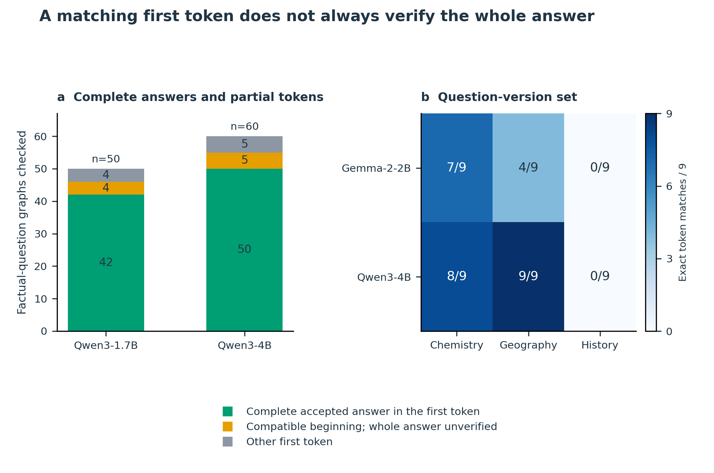
Figure S5. A matching first token does not always verify the whole answer. A, Audit the first predicted text unit, or token, using the Qwen tokenizers. Green means the whole expected answer fits in that token; yellow means it is only a compatible beginning, so the completed answer is unverified; gray means a different token. Qwen3-1.7B has 42 whole-answer tokens, four compatible beginnings, and four different tokens among 50 available factual-question graphs. Qwen3-4B has 49, five, and five, respectively, among 59 available factual graphs. Counts include development and test questions and partial history sets; they are not the included evaluation counts in Figure 2. Qwen3-4B is missing one factual graph and one invented name control graph. Official Qwen tokenizer versions agree with all saved prompt pieces and decoded top tokens, but the exact versions used at the time of graph collection cannot be fully recovered. Gemma tokenizer access was denied, leaving that audit unresolved. B, In the fact/wording experiment, counts use the exact first-token matching rule after trimming whitespace; that rule is unchanged. Only Qwen3-4B geography matches in all nine questions. Its fact/wording differences are 0.101/0.106, which do not establish that either factor dominates. A zero in history means zero matches under this rule, not zero history knowledge. *The Qwen3-4B collection is incomplete.
Ambiguous IDs occurred in 84/120 Gemma question/control exports and 13/27 Gemma fact/wording exports; none were detected in 91 Qwen3-1.7B or 145 available Qwen3-4B exports. Reconstruction-error node influence remains nonzero: median fractions were approximately 7.15%, 6.06%, and 14.52% in the respective question/control datasets. These are audit-defined fractions of absolute nonterminal influence, not causal percentages of an answer explained. The clean-export Gemma evaluation sensitivity has only two facts. Differences across pipelines combine prompt coverage, model, exporter, and approximation choices, rather than isolating architecture or answer accuracy.
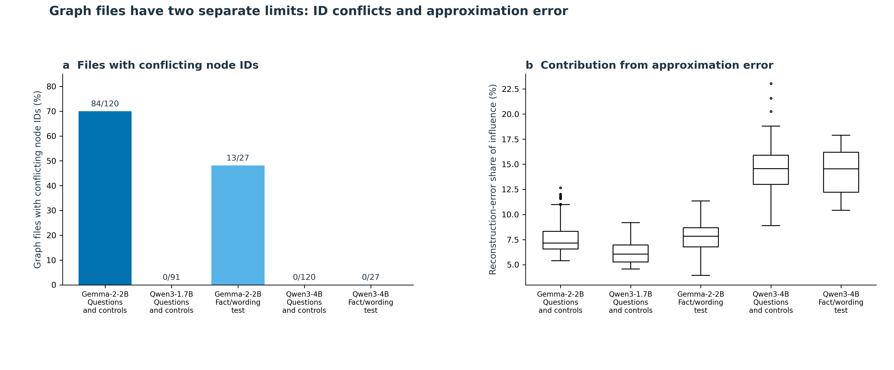
Figure S1. Graph files have two separate limits: ID conflicts and approximation error. A, The percentage of saved raw graph files in which the same node ID refers to conflicting node identities. Labels show affected files over files checked. Qwen3-1.7B has 0/91 detected conflicts. Zero means no conflict was detected, not no graphs or no model errors. Question/control sets include factual questions and controls; the fact/wording sets vary both factors. B, Reconstruction-error nodes record part of the model computation not captured by the feature approximation. The axis gives their share of absolute nonterminal-node influence, using the saved audit definitions. This is not the percentage of wrong answers or of reasoning explained. Box centers mark medians; boxes span the middle 50%, whiskers extend to values within 1.5 box lengths, and dots show values beyond the whiskers. Qwen3-1.7B has median reconstruction-error influence 6.06%. Counts include all available graphs, including controls and partial sets, not only included evaluation questions. Gemma and Qwen3-1.7B distributions use raw-file audits; Qwen3-4B uses converted graphs with no ambiguous IDs removed. Differences combine model, exporter, and approximation choices; they do not isolate model size or architecture.
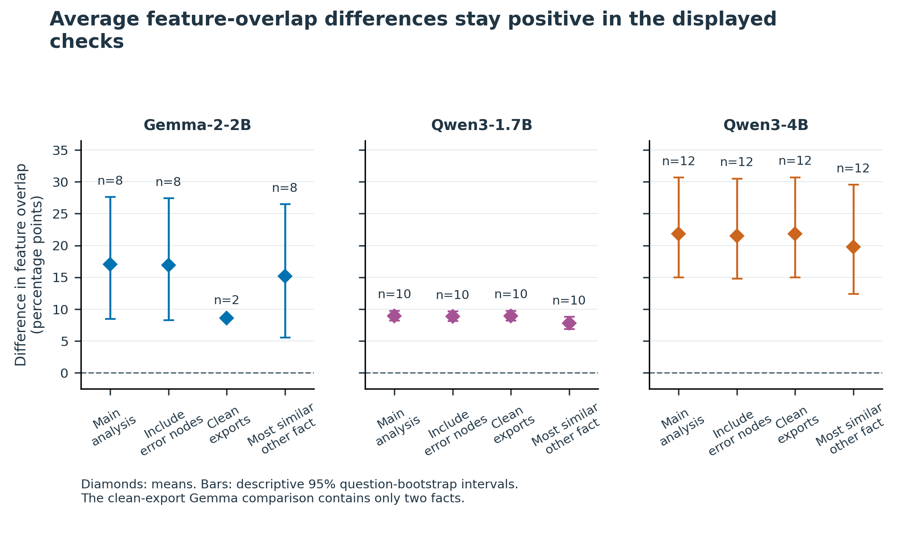
Figure S2. Average feature-overlap differences stay positive in the displayed checks. The difference in feature overlap is same-fact overlap minus other-fact overlap, using the comparison specified for each check. Compare the main analysis with three alternatives: include reconstruction-error nodes; use only files without detected node-ID conflicts; or compare with the most similar other-fact question rather than the average other-fact question. Reconstruction-error nodes represent approximation error, not wrong model answers. Points are saved averages; bars are 95% bootstrap intervals from resampling test questions. n counts questions. Qwen3-1.7B means are 0.089, 0.089, 0.089, and 0.078, respectively (n=10 each). Restricting files requires rebuilding the comparison groups and leaves only two Gemma questions, so that positive result is weak evidence on its own. The size-regression intercept is not plotted: with centered predictors it equals the unadjusted mean and is not an independent check. This figure concerns feature-set overlap, not every graph metric; the separate edge-flow cosine result is inconclusive. *Qwen3-4B remains incomplete (145/147 graphs).
An additional inspection of token-location summaries provided a narrower clue. In all four capital-name failures, feature sources at the wrong country’s name in the list had 4.9–14.6 times the absolute direct incoming weight of sources at the intended country’s name. In all four named-country capital controls, the intended country’s name had greater weight. The corresponding A/B summaries did not exhibit a consistent wrong-country dominance. This format-dependent observation is compatible with incorrect reference selection, but token location does not establish feature semantics or causal necessity.
The graphs also leave substantial uncertainty. Reconstruction-error sources accounted for a median 23.1% of absolute direct incoming weight to the observed logit across the 16 graphs (range 17.2–31.4%). The intended correct logit was absent from all eight failure exports, so its attribution is unavailable rather than zero. Most displayed nodes occur at late layers near the answer-generation position; a “chat frame” location label does not imply a formatting mechanism. Crucially, these selected layouts confound choosing the answer option at the requested position with choosing the country named by the excluded ordinal in phrases such as “first country, not the second.” Position matching and mishandled negation therefore remain observationally indistinguishable in this batch.
The word-matching audit, equal-feature-count sampling, and graph-location filters support the comparisons in Results §§3.2–3.5. They test different aspects of the measurement: available comparison support, representation size, and retained node locations.
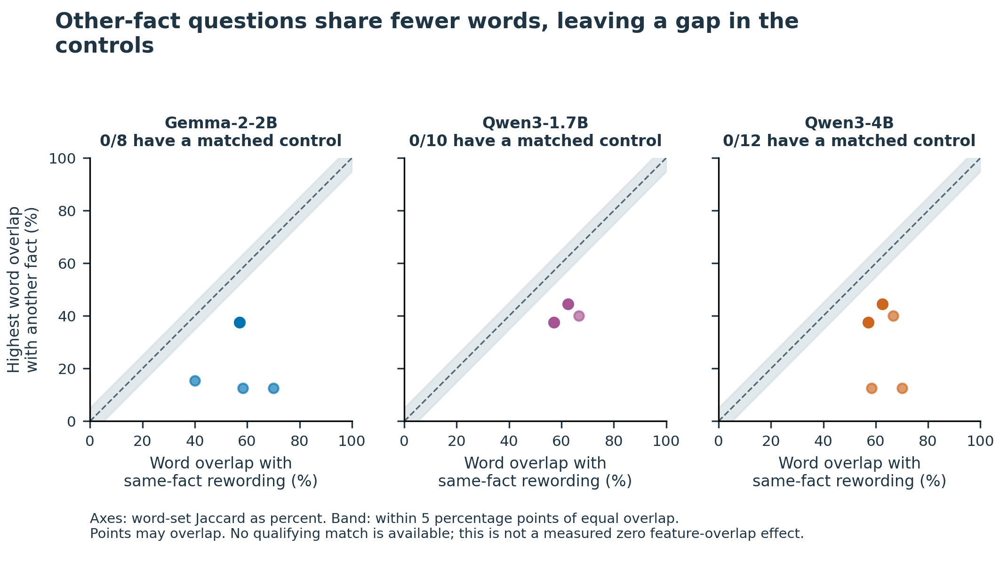
Figure S4. Other-fact questions share fewer words, leaving a gap in the controls. For each test question, compare word overlap with its same-fact rewording (horizontal axis) against the highest word overlap with any other-fact rewording (vertical axis). Word overlap uses unique letter/number words, ignores letter case, and keeps common words. Both axes use Jaccard overlap: shared words divided by all distinct words across the pair. The dashed line means equal overlap; the shaded band allows a difference of 0.05 in either direction. Every other-fact comparison lies more than 0.05 below its same-fact comparison. No test question has a matched control under any of the three saved word/size matching rules: 0/8 for Gemma-2-2B, 0/10 for Qwen3-1.7B, and 0/10 for Qwen3-4B. This is a missing comparison, not a measured zero effect or proof that words explain all feature overlap. Same-fact questions also share their expected answer, so the data do not isolate meaning from words or answers. *Qwen3-4B remains incomplete (145/147 graphs).
An earlier regression check does not supply independent evidence against graph-size confounding: the ordinary least-squares intercept with centered predictors equals the original sample mean by construction. Sampling equal numbers of features provides a more direct but still limited check.
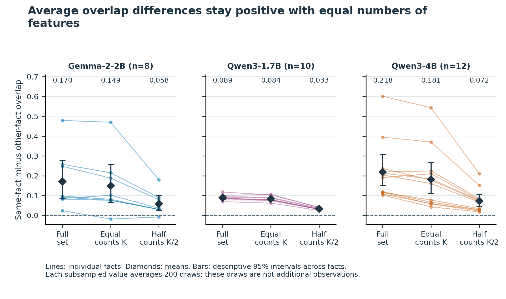
Figure S3. Average overlap differences stay positive with equal numbers of features. The difference in feature overlap is same-fact overlap minus average other-fact overlap within the same subject and test set. Within each model, subject, and test set, randomly sample the same number of features from every graph. K is the number of features in the smallest graph in that group; the second check uses half that number, rounded down. Repeat 200 times, reusing each sampled graph across comparisons within a repetition. Lines show individual test questions; diamonds show averages. Bars are descriptive 95% bootstrap intervals from resampling questions, not from the 200 feature samples. Seven of eight Gemma questions and all ten questions in each Qwen sample retain positive average differences. Qwen3-1.7B means are 0.089 for the full feature sets, 0.084 at K, and 0.033 at K/2. Equalizing counts does not remove differences in shared words, answers, or which features the exporter retains. A smaller overlap score after sampling is not a percentage of signal explained. *Qwen3-4B remains incomplete (145/147 graphs).
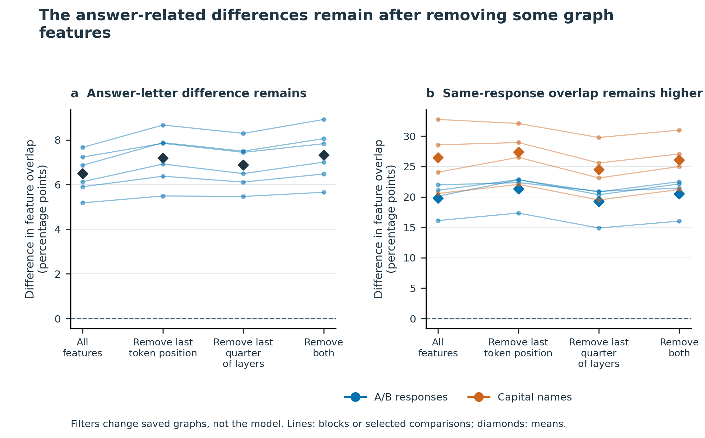
Figure S6. The answer-related differences remain after removing some graph features. Qwen3-4B only. Repeat the saved comparisons after removing features at the last token position, in the last quarter of observed feature layers, or both. Removal happens before combining feature identities across positions. A, Plot the difference between the same-letter and changed-letter fact comparisons in Figure 5B. Each line represents one of six country pairs; black diamonds show averages. B, Plot overlap with the correct same-answer response minus overlap with the correct intended-country response in the selected errors from Figure 6. Lines show the individual comparisons; colored diamonds show format averages. All filtered feature sets are nonempty. Zero means equal overlap, not missing data. These checks were chosen after seeing earlier results. No confidence intervals or new population tests are attached. Removing features from saved graphs is not an intervention on the model and does not establish a cause. The remaining graphs are still constructed around the answer being produced.
The 91-graph Qwen3-1.7B dataset was analyzed using the four-version,
expected-next-token, and comparison rules within the same subject area
in Sections 2.1–2.2. It includes 19 qualifying facts across development
and evaluation: nine chemistry and ten geography. The mercury
development fact remains excluded because both factual prompts predict
H, a compatible beginning of the expected Hg,
rather than the whole expected string. All ten history facts are
excluded for incomplete prompt/control sets, including four with no
returned graphs. The primary evaluation contains five chemistry and five
geography facts, with subject means of 0.0854 and 0.0935 and all ten
differences positive. Development means, reported separately, are 0.0723
for chemistry (n=4) and 0.0771 for geography (n=5).
For the ten evaluation facts, the mean difference is 0.0894, with a descriptive 10,000-resample fact-level bootstrap interval of [0.0820, 0.0976]. The nominal one-sided sign-flip p-value is 0.0009766. The exact fact-label permutation within each subject area gives p=0.0000694 across 14,400 assignments. Holm correction covers the 15 secondary metric/contrast tests defined in Section 2.8, excluding the primary comparison. These are exploratory summaries. Facts share comparison questions, so the bootstrap and sign-flip calculations do not remove dependence; the conditional permutation assumes exchangeable factual pairings and does not control shared words or expected answers. The three-subject requirement remains unmet.
| Comparison or check in the evaluation sample | Mean difference | Descriptive 95% interval | Positive facts / included facts |
|---|---|---|---|
| Same-fact minus average other-fact overlap | 0.0894 | [0.0820, 0.0976] | 10/10 |
| Same-fact minus most similar other-fact overlap | 0.0780 | [0.0686, 0.0879] | 10/10 |
| Same-fact minus average other-fact overlap, including reconstruction errors | 0.0887 | [0.0814, 0.0968] | 10/10 |
| Same-fact minus same-pattern invented name overlap | -0.0114 | [-0.0203, -0.0011] | 2/10 |
| Same-fact minus reworded invented name overlap | 0.1059 | [0.0917, 0.1200] | 10/10 |
| Same-pattern control, matched by broad output type | -0.0109 | [-0.0208, 0.0005] | 2/9 |
| Reworded control, matched by broad output type | 0.1059 | [0.0918, 0.1194] | 10/10 |
| Equal feature counts, at the subject minimum K | 0.0835 | [0.0759, 0.0916] | 10/10 |
| Equal feature counts, at half K | 0.0331 | [0.0303, 0.0361] | 10/10 |
All table entries are differences in Jaccard overlap. The equal-count rows summarize each fact over 200 feature samples, using K=1,768 for chemistry and K=1,682 for geography. Every repetition’s overall mean and every fact’s average difference were positive at both sampling sizes; the 200 repetitions are not additional independent facts. Deleting one already-computed fact difference at a time leaves means of 0.0863–0.0917, with the original comparison pools held fixed.
Using exported influence to weight features gives a positive same-fact minus other-fact cosine difference of 0.0741 ([0.0641, 0.0854], 10/10 positive). Weighted comparisons favor the same-pattern invented name control in all ten cases (mean difference -0.0777), but favor the factual rewording over the reworded control in all ten (0.0960). However, the coarser layer-to-layer edge-flow comparison is not consistently positive: its mean difference is 0.00016 ([-0.00106, 0.00119], 5/10 positive). The layer-profile comparison also does not pass its Holm-adjusted secondary test (p=0.1934). These results extend the feature-sharing observation, not a claim that all aspects of graph structure distinguish same-fact questions.
The recorded source families were consistent across the Qwen3-1.7B collection. The 41 completion exports identify version 2.0.0b34 and passed identifier, endpoint, duplicate-edge, and finite-value checks. Output-coverage settings differ across some files, as documented in Section 2.8; unchanged hosted weights cannot be independently verified. Shorter history prompts were not generated or substituted; the feasibility proposal is deferred from this paper.
None of the ten evaluation facts had a qualifying other-fact match under any of the three word-matching rules. Word overlap with the same-fact rewording exceeded the best other-fact overlap by 0.1806–0.2667. All ten same-fact pairs shared the expected answer; none of the 40 directed other-fact pairs did. The chemistry and geography observations therefore leave a gap in word- and answer-matched controls. These audits do not alter the inclusion rules or primary estimates.
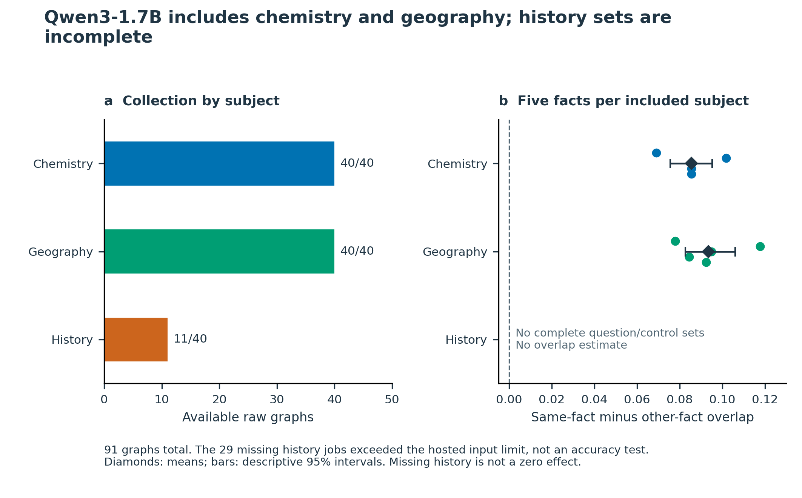
Figure S7. Qwen3-1.7B includes chemistry and geography; history sets are incomplete. Qwen3-1.7B collection and subject coverage. A, Available raw graphs, including development and evaluation prompts: 40/40 chemistry, 40/40 geography, and 11/40 history graphs, for 91 graphs total. Bar colors identify subjects. The 29 unavailable history jobs were rejected for exceeding the hosted token limit, not counted as wrong model answers. No history fact has all four required prompt roles. B, Included test questions: five chemistry and five geography questions. Each point is same-fact rewording overlap minus average other-fact rewording overlap within the same subject and evaluation set. Diamonds show means and bars show descriptive 95% question-bootstrap intervals: chemistry 0.085 (0.076–0.095) and geography 0.093 (0.083–0.106). All ten differences are positive. History has no plotted estimate, not a zero effect. Inclusion retains the complete four-role and expected-next-token rules. Shared words and expected answers remain coupled to fact identity.
Figure S8 provides a visual reference for the primary question/control analysis in Section 2.2. Figure 1 describes the wider study design; the fact/wording, answer-letter, and selected-error experiments retain their own comparisons and inclusion rules.
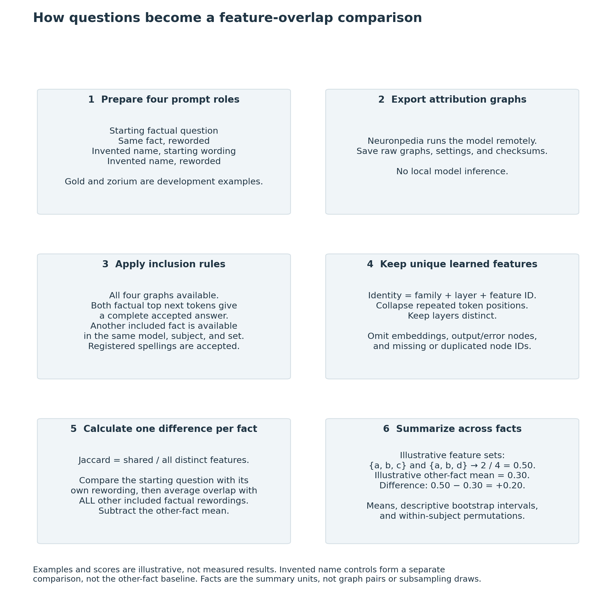
Figure S8. How questions become a feature-overlap comparison. Primary feature-overlap workflow for Gemma-2-2B, Qwen3-1.7B, and Qwen3-4B. The four prompt roles are starting factual, same fact reworded, invented name in the starting sentence pattern, and invented name reworded. Exact chemistry prompts about gold and iron, plus invented name zorium, are development examples from the manifest, not evaluation questions. Hosted Neuronpedia graph exports are analyzed locally without local model inference. Eligibility requires four available representations after export/integrity checks, both factual highest-probability next tokens matching the expected token after trimming whitespace, and another eligible fact in the same model, subject, and development/evaluation set. Unique learned-feature identities are (family, layer, feature ID): positions collapse, but layers remain distinct. Embeddings, logits, reconstruction-error nodes, and nodes with missing or duplicated node IDs are omitted. Jaccard overlap J is shared unique features divided by distinct features in either set. Each starting set T_i is compared with its own rewording P_i and every other included factual rewording P_j in the same model/subject/set. The baseline is the mean of all those Jaccard overlaps, excluding i; iron illustrates one comparator, not the whole pool. Subtraction yields one difference per fact, M_i. Summaries, bootstrap intervals, and permutations within the same subject area concern facts, not graph pairs. Invented-name comparisons are separate controls, not the other-fact baseline; broad output-token-type matching is not the primary eligibility rule. Illustrative feature sets and scores, not measured results: {a,b,c} and {a,b,d} share a and b (green), while c and d are unshared (white), giving 2/4=0.50; an illustrative baseline of 0.30 gives +0.20. These values do not describe the gold or iron graphs. Letters denote identities, not concepts. Arrows show analysis steps, not causal pathways; overlap alone does not establish causal use or answer correctness.
The September plan is
EXPLORATORY_CONFOUND_CHECKS_20260905.md. The CPU-only
analysis and plotting scripts are
scripts/exploratory_confound_checks.py and
scripts/plot_exploratory_confound_checks.py. Their results,
input hashes, tokenizer revisions, per-graph/pair/fact tables,
subsampling repetitions, logs, and SVG/PNG figures are saved under
data/model_extension/exploratory_20260905. The original
primary files and earlier six-figure package are preserved. The new
analyses do not constitute a clean-room rerun of every original
estimator.
A curated working-paper review package is publicly available on the GitHub submission branch. It contains the draft, figures, summary tables, protocols, and code snapshots; it is not a peer-reviewed publication or a complete raw-data release. The 7 November review edition incorporates the current available datasets and approved manuscript revisions. Raw Neuronpedia exports, tokenizer/model files, credentials, and downloaded reference PDFs are excluded. Their redistribution permissions remain unresolved, and a complete appropriately licensed deposit and independent reproduction remain outstanding. The October reproduction checks used saved data on the same machine, not an independent reviewer or a fresh hosted-model run. Human authors must review scientific claims and references. Codex assisted with code, audit, analysis, figures, and drafting; that assistance does not substitute for independent validation.
The October closeout audit is generated by
scripts/audit_paper_closeout.py under
data/model_extension/final_closeout_20261005; it
reconstructs the archived matched-choice and failure contrasts from
hash-verified saved graphs. The final history protocol is
HISTORY_CHOICE_FINAL_PROTOCOL.md, with fixed design,
runner, and analyzer in scripts/history_choice_closeout.py,
scripts/run_history_closeout.py, and
scripts/analyze_history_closeout.py. Its prompts, local
freeze, request records, checksums, and outcomes are maintained
separately under
data/model_extension/history_choice_final_v1.
requirements-closeout.txt specifies direct dependencies;
the resolved package versions, test logs, and
verification.json are saved under the closeout
reproduction directory by
scripts/reproduce_closeout.py. The isolated same-machine
reproduction reconstructed all 23 original primary margins from 342
checksum-verified available raw graphs, matched the closeout audit, and
passed 82 software tests. A separate terminal-pilot validator
reconstructed the 15/20 gate from archived responses, checked frozen
hashes and the shared request ledger, and confirmed that no evaluation
graphs were generated. These checks are not independent human review or
a fresh reproduction of hosted model outputs.
The matched-choice follow-up is documented in
MATCHED_CHOICE_CHAT_V2_PROTOCOL.md and
MATCHED_CHOICE_RESULTS_FOR_MANUSCRIPT.md; its archived
inputs, block-level results, and figures are under
data/model_extension/matched_choice_chat_v2. The failed
position pilot is documented in
MATCHED_CHOICE_POSITION_V3_PROTOCOL.md. Its diagnostic
audit remains under
data/model_extension/position_artifact_diagnostic_20261001.
The Qwen3-1.7B completion follows
QWEN17_COMPLETION_ATTEMPT_20261106.md. Its unchanged raw
files, failed-request records, checksums, technical audit, frozen
analysis plan, representation caches, per-fact tables, and results are
retained under
data/model_extension/qwen17_completion_20261106. The entry
points are scripts/complete_qwen17_controls.py,
scripts/audit_qwen17_completion.py, and
scripts/analyze_qwen17_completion.py; only the collector
makes hosted requests. The current figure builder uses
scripts/plot_updated_cohort_figures.py to incorporate the
combined sample, including Figure S7. The earlier standalone completion
plot remains reproducible with
scripts/plot_qwen17_completion.py. The sharing package
includes derived results, analysis-plan and execution records, and
source tables, but not raw graphs or full feature caches. This
completion does not overwrite any original cohort or frozen result.
The figure pipeline uses
scripts/audit_qwen17_completion_figures.py for the
retrospective word-overlap, expected-token, and export summaries stored
in the completion directory’s figure_audit folder.
scripts/plot_updated_cohort_figures.py supplies the
combined Qwen3-1.7B sample throughout the current figures, without
displaying its archived subset as another sample.
scripts/sync_manuscript_figure_captions.py synchronizes
reviewed titles and legends without rewriting body prose. All current
figures retain source tables and input hashes; earlier analyses and
figure packages remain archived. The 50-graph subset and its five-fact
estimates are preserved as provenance, not pooled with the combined
results or counted as independent evidence. Original protocols were
locally frozen, not publicly preregistered; outcome-informed analyses
retain their exploratory status.
The failure graph protocol is
FAILURE_CASE_GRAPH_ANALYSIS_PLAN.md. All 16 raw exports,
metadata, code snapshots, hashes, audits, converted node/edge tables,
role summaries, comparison values, and PNG/SVG figures are under
data/model_extension/failure_case_graphs_v1. The saved-data
analysis, figure, and validation entry points are
scripts/analyze_failure_case_graphs.py,
scripts/plot_failure_case_graphs.py, and
scripts/validate_failure_case_graphs.py. The descriptive
country-location ratio divides absolute_weight for feature
sources at the other country’s list occurrence by the corresponding
weight at the intended country’s occurrence in each capital-name graph’s
source_role_totals.csv. The four failure ratios are 4.919,
8.773, 13.567, and 14.630 approximately; the unrounded tables are
authoritative. This manuscript integration changes no frozen estimates
or analysis files.
Ameisen, E., Lindsey, J., Pearce, A., et al. (2025). Circuit Tracing: Revealing Computational Graphs in Language Models. Methods.
Franco, G., Tassis, L. M., Rohr, A., and Crovella, M. (2026). Finding Interpretable Prompt-Specific Circuits in Language Models. arXiv:2602.13483.
Qwen. Official Qwen3-1.7B tokenizer configuration and Qwen3-4B tokenizer configuration. Actual downloaded revisions and file hashes are in the audit artifacts.
Hugging Face. Tokenizer encoding and decoding API. Google. Gemma-2-2B repository.
Zheng, C., Zhou, H., Meng, F., Zhou, J., and Huang, M. (2024). Large Language Models Are Not Robust Multiple Choice Selectors. ICLR. arXiv:2309.03882.
Wang, X., Ma, B., Hu, C., et al. (2024). “My Answer is C”: First-Token Probabilities Do Not Match Text Answers in Instruction-Tuned Language Models. arXiv:2402.14499.
Zhang, Z., Xiong, H.-D., Wilson, R. C., Aoi, M., Mattar, M. G., and Ji-An, L. (2026). The Position Curse: LLMs Struggle to Locate the Last Few Items in a List. arXiv:2605.07127.
The references support the methods and comparisons discussed here; they do not constitute an exhaustive novelty review.